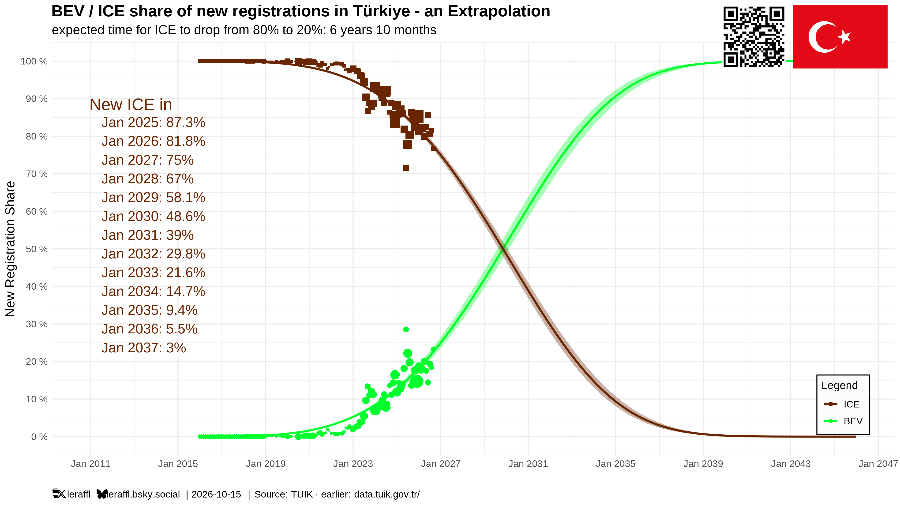
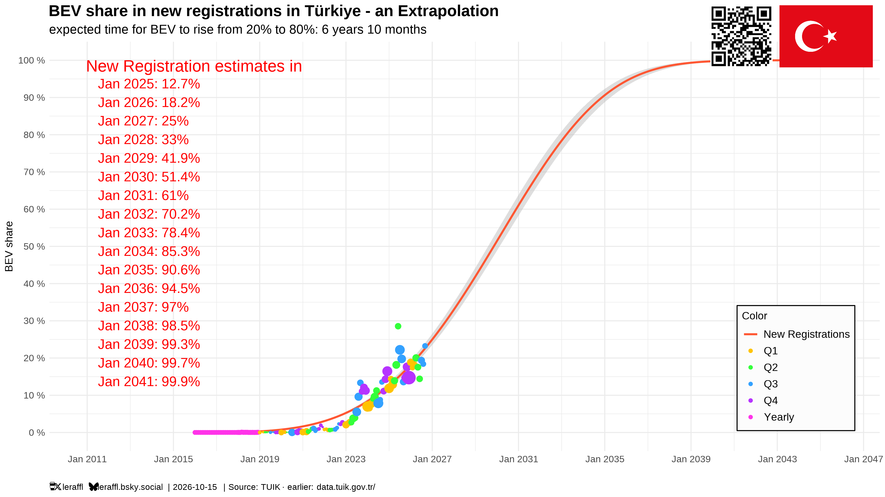
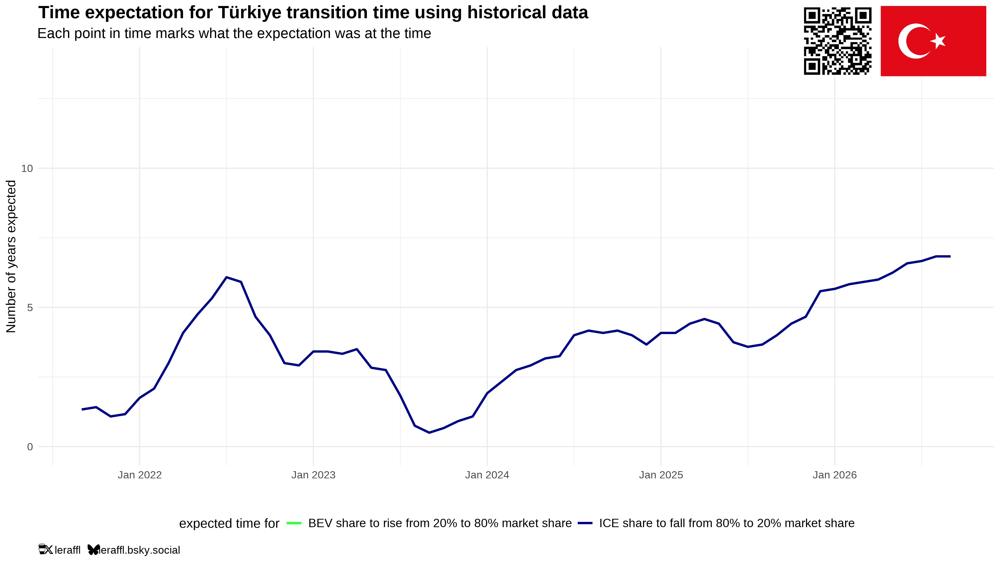

Türkiye
Data through September 2026 · curve fitted 2026-10-15 PDF
Who gained, who lost
Lost share: Petrol 4.6 and diesel 1.7. Gained: Hybrid 5.0 and battery electric 1.1. In percentage points of all new registrations.
Share of new registrations in the last 12 months (Oct 2025 to Sep 2026) against the 12 months before (Oct 2024 to Sep 2025). The changes add up to zero: what one row gains, the others lose. A row appears only where the source fills that column in every period of both windows; everything else is in the last row.
The latest periods
| Period | All registrations | BEV | BEV % | Hybrid % | Everything else % |
|---|---|---|---|---|---|
| Sep 2026 | 64,361 | 14,965 | 23.3 | 29.4 | 47.3 |
| Aug 2026 | 66,048 | 12,156 | 18.4 | 34.3 | 47.3 |
| Jul 2026 | 78,761 | 15,267 | 19.4 | 32.7 | 47.9 |
| Jun 2026 | 73,665 | 10,617 | 14.4 | 28.7 | 56.9 |
| May 2026 | 75,851 | 13,305 | 17.5 | 31.1 | 51.3 |
| Apr 2026 | 81,907 | 16,411 | 20.0 | 35.1 | 44.9 |
| Mar 2026 | 80,348 | 14,532 | 18.1 | 34.6 | 47.3 |
| Feb 2026 | 63,171 | 11,001 | 17.4 | 31.4 | 51.2 |
| Jan 2026 | 81,108 | 15,305 | 18.9 | 28.6 | 52.6 |
| Dec 2025 | 147,173 | 21,695 | 14.7 | 30.1 | 55.1 |
| Nov 2025 | 96,003 | 16,931 | 17.6 | 30.1 | 52.3 |
| Oct 2025 | 87,624 | 12,863 | 14.7 | 24.4 | 60.9 |
| Sep 2025 | 80,390 | 10,957 | 13.6 | 26.7 | 59.6 |
Shares are the column divided by the source's own total. The last column is what remains after the columns to its left. Newest first.
The fitted curve
| BEV share | Curve reaches it in | 95 % confidence interval |
|---|---|---|
| 10 % | 2024 | 2023–2025 |
| 20 % | 2026 | 2025–2029 |
| 50 % | 2029 | 2027–2039 |
| 80 % | 2033 | 2029–2052 |
| 90 % | 2034 | 2029–2060 |
The interval is for the fitted line, point by point, and holds only if the transition keeps following an S-shape. How the intervals are calculated.
The gallery fits a generalized Weibull curve to the BEV share of each period: share(t) = 1 − exp(v1 · (t − t0)v2), t in calendar years. For Türkiye: v1 = −1.010 × 10−5, v2 = 4.127, t0 = 2015, fitted through September 2026, model run 2026-10-15. This is the project's own model, not an official forecast. A policy change or a stall is not in it.
The gallery charts


Combustion, battery electric and hybrid curves

BEV share with the fitted curve Market split, trailing twelve months
Market split, trailing twelve months

Time to reach each BEV shareRendered 2026-10-15 from data through Sep 2026. Charts are CC BY 4.0; open one for the full size.
Where the numbers come from
New-vehicle registration data for Türkiye from the national statistics institute (TÜİK).
How it works
Türkiye's figures come from TÜİK, the Turkish Statistical Institute, from its monthly «Motorlu Kara Taşıtları» press bulletin. TÜİK is the official statistics body, so coverage of registrations is complete.
The bulletin's authoritative monthly and year-to-date totals are read from the narrative text; the per-fuel breakdown only exists as an image, so it is OCR'd. Three checks guard the result: narrative-vs-OCR total, a per-fuel sum check with a single-error repair via the published percentages, and a cross-check against the same month a year earlier.
The Veri Portalı is a React SPA with no listing endpoint, so the bulletin for a given month is found by walking bulletin ids outward from the newest one already recorded in the CSV and matching on title and period. Nothing is hard-coded and the anchor re-derives itself each month.
Raw source
Go and check the numbers yourself:
TÜİK Veri Portalı — Motorlu Kara Taşıtları bulletins ↗
Newest stored month (2026-09) was read from this exact document ↗.
How the data flows
Each new or changed month re-renders the country. Shares are read from the CSV as column ÷ TOTAL and grouped into three curves. A generalized Weibull S-curve is fitted to the BEV and the ICE share, and the charts, the fitted parameters, the twelve-month totals and the uncertainty bands are rewritten.
- BEVBEV
- PHEV or EREV (plug-in hybrids, range extenders)Does the source split plug-ins from other hybrids?
- yesPHEV
- no — one combined hybrid figure (parked in HEV)ICEthe PHEV curve is left out, never drawn at zero
- HEV or MHEV (full and mild hybrids — no plug)ICE
- petrol, diesel, gas, flex-fuel, othersICE
Definitions & scope
| Acquisition | PDF — parsed from a published PDF |
|---|---|
| Vehicle scope | Otomobil (passenger cars). The bulletin covers eight vehicle categories but only otomobil carries a fuel split. |
| HEV (full hybrids) | Hybrids are a single combined bucket, placed in the HEV column; PHEV is left empty. |
Variants
Each variant is its own series with its own CSV. Not every variant is charted in the gallery — the CSV is the authoritative record either way. BEV share and volume cover the last twelve months of each series.
| Variant | What it counts | Held | BEV share | Registrations | Raw data |
|---|---|---|---|---|---|
| Whole | Otomobil (passenger cars) only — the one category TÜİK breaks down by fuel. | 2016-01 – 2026-09 129 rows | 17.6 % | 996,020 | data/Türkiye.csv |
History we hold
Every bar is the span actually present in our stored CSV — breaks in a bar are real gaps in the series, not rendering. Cadence is shown on the right.
Whole 2016-01–2026-09 (129 rows). Some rows additionally carry a time_interval of yearly; the cadence shown is the spacing the periods actually have.
Which fuel columns this source fills
A blank column almost never means "no such cars" — it means this source does not split them out, and those vehicles are counted inside another column. Check the caveats for where they land.
| BEV | HEV | PETROL | DIESEL | OTHERS | |
|---|---|---|---|---|---|
| Whole | reported | reported | reported | reported | reported |
reported column exists but is zero in every row not reported by this source. Hover a cell for the row count.
Caveats
- Hybrids are reported as one combined bucket (the Türkiye/Georgia convention), placed in the HEV column — PHEV and HEV cannot be separated.
- The fuel table is an image in the bulletin, not markup, so the per-fuel numbers are OCR'd rather than read.
- Printed under the charts: Source reports a single combined hybrid figure (no PHEV/HEV split): shown as 'Hybrid' in the fuel-split chart; counted within ICE in the BEV/ICE trajectory, which omits a PHEV curve because this source never measures one.
Using this card
Cite as: LeRaffl BEV Trajectory Gallery, Türkiye model card, data through September 2026. https://leraffl.github.io/LeRaffl-Gallery/sources/turkiye.html
Charts, fitted curves and text are CC BY 4.0: name the gallery when you use them. The registration figures stay with TÜİK Veri Portalı. The card is rebuilt whenever the data changes, so quote it with its "data through" month.